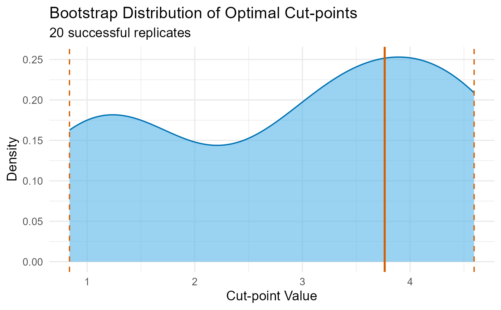

Validate an Optimal Cut-point Using Bootstrapping
Source:R/validate_cutpoint.R
validate_cutpoint.RdAssesses cut-point stability from [find_cutpoint()] via bootstrap analysis, generating 95 survival (time-to-event) analysis.
Usage
validate_cutpoint(
cutpoint_result,
num_replicates = 500,
n_cores = 1,
seed = NULL,
nmin = NULL,
...
)
# S3 method for class 'validate_cutpoint_result'
print(x, ...)
# S3 method for class 'validate_cutpoint_result'
plot(x, ...)
# S3 method for class 'validate_cutpoint_result'
summary(
object,
show_descriptives = TRUE,
show_ci = TRUE,
show_params = TRUE,
plot.it = FALSE,
...
)Arguments
- cutpoint_result
An object from [find_cutpoint()].
- num_replicates
Number of bootstrap replicates. Default is 500.
- n_cores
Number of CPU cores to use. Default is 1 (sequential). Set to > 1 to enable parallel processing.
- seed
Optional integer for reproducible results.
- nmin
Minimum group size for bootstrap runs. Defaults to 90 of original `nmin` to reduce failures.
- ...
Unused.
- x
An object of class `validate_cutpoint_result`.
- object
An object of class `validate_cutpoint_result`.
- show_descriptives
Logical. Show descriptive statistics?
- show_ci
Logical. Show confidence intervals?
- show_params
Logical. Show validation run parameters?
- plot.it
Logical. Display the density plot?
References
Efron, B. (1979). Bootstrap Methods: Another Look at the Jackknife. *The Annals of Statistics*, 7(1), 1–26. doi:10.1214/aos/1176344552
Rota, M., Antolini, L., & Valsecchi, M. G. (2015). Optimal cut-point definition in biomarkers: The case of censored failure time outcome. *BMC Medical Research Methodology*, 15(1), 24. doi:10.1186/s12874-015-0009-y
Examples
# Fast validation on small data (runs in < 2 seconds)
data(crc_virome)
fit <- find_cutpoint(
data = head(crc_virome, 50),
predictor = "Alphapapillomavirus",
outcome_time = "time_months",
outcome_event = "status",
num_cuts = 1,
method = "systematic"
)
#> ℹ Running systematic search...
#> ℹ Testing for 1 cut-point(s)...
#> ✔ Systematic search complete.
#>
#> ── Optimal Cut-point Analysis for Survival Data (Systematic) ───────────────────
#> • Predictor: Alphapapillomavirus
#> • Criterion: logrank
#> • Optimal Log-Rank Statistic: 2.8814
#> ✔ Recommended Cut-point(s): 3.764
if (!any(is.na(fit$optimal_cuts))) {
val <- validate_cutpoint(fit, num_replicates = 20, seed = 123)
summary(val)
plot(val)
}
#> ℹ Using random seed 123 for reproducibility.
#> ℹ Bootstrap `nmin` not set, defaulting to: 18
#> ℹ Validating 1 cut(s) from 'systematic' search using 'logrank'.
#> ℹ Running 20 replicates sequentially (n_cores = 1).
#> ✔ 20 replicates completed.
#> Cut-point Stability Analysis (Bootstrap)
#> ----------------------------------------
#> Original Optimal Cut-point(s): 3.764
#> Successful Replicates: 20 / 20 ( 100 %)
#> Failed Replicates: 0
#>
#> 95% Confidence Intervals
#> ------------------------
#> Lower Upper
#> Cut 1 0.837 4.594
#>
#> Bootstrap Summary Statistics
#> ---------------------------
#> Cut Mean SD Median Q1 Q3
#> 25% Cut1 2.927 1.427 3.121 1.483 3.971
#>
#> Hint: Use `summary()` or `plot()` to visualize stability.
#> Cut-point Stability Analysis (Bootstrap)
#> ----------------------------------------
#> Original Optimal Cut-point(s): 3.764
#>
#> Bootstrap Distribution Summary
#> -----------------------------
#> Cut Mean SD Median Q1 Q3
#> 25% Cut1 2.927 1.427 3.121 1.483 3.971
#>
#> 95% Confidence Intervals
#> ------------------------
#> Lower Upper
#> Cut 1 0.837 4.594
#>
#> Validation Parameters
#> ---------------------
#> Replicates Requested: 20
#> Successful Replicates: 20 / 20 ( 100 %)
#> Failed Replicates: 0
#> Cores Used: 1
#> Seed: 123
#> Minimum Group Size (nmin): 18
#> Method: systematic
#> Criterion: logrank
#> Covaricates: None
#>
